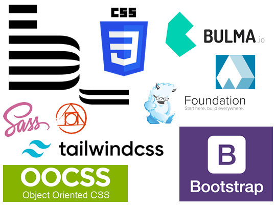

El proposito de este sitio es la enseñanza de HTML con el enfoque en los conceptos: Fundamentos de CSS, Frameworks CSS.
Fundamentos de CSS

CSS son las siglas en inglés para «hojas de estilo en cascada» (Cascading Style Sheets). Básicamente, es un lenguaje que maneja el diseño y presentación de las páginas web, es decir, cómo lucen cuando un usuario las visita. Funciona junto con el lenguaje
HTML que se encarga del contenido básico de las páginas, segun lo expresa Celaya Luna 2022.
- Sirve para dar estilo a los elementos
- Da color, tamaño y espacios a los elementos
- selector: define quien llevará el estilo
Frameworks CSS

Colección de frameworks CSS, o frameworks de diseño para sitios web, que permiten editar de una manera más ágil las hojas de estilo en cascada y crear temas de diseño consistentes, vamos a incluir los frameworks CSS actuales más importantes, los más usados
por la comunidad y que ofrecen un estilo de desarrollo moderno,segun lo expresa Celaya Luna 2022.
- Bootstrap
- Materialize CSS
- Tailwind CSS
- Foundation